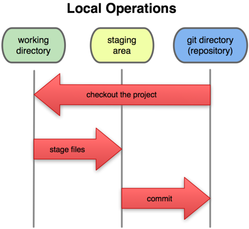

Created Samstag 29 Oktober 2011
- DVCS (Distributed Version Control System) == Work offline push online
- erstellt Snapshots von Dateien und ihren Zuständen
- Änderungen werden in Snapshots in einer Datenbank in sogenannten Commits gespeichert
- jeder Snapshot (Commit) enthält nur die Dateien die geändert wurden, nicht geänderte Dateien werden nur gelinkt
- Jede Datei wird in blobs mit einer SHA-1 Checksumme gespeichert und jede Veränderung in Git ist durch ihre Checksumme in der Datenbank adressierbar
3 Stages
commited → Veränderung wurde sicher in der Git Datenbank gespeichert
modified → eine oder mehrere Veränderung wurde nicht in der Git Datenbank gespeichert und sind nicht von Git erfasst
staged → eine oder mehere Veränderungen wurden von Git erfassst jedoch nicht in der Datenbank aufgenommen (commited)

Setup
/etc/gitconfig → globale Konfigurationsdatei für git
~/.gitconfig → nutzerspezifische Konfigurationen für git
FHS:etc:gitconfig
General use
git <Modul> <Optionen <Parameter>
<Modul>
add → hinzufügung von Dateien zur Staging Area
apply → Hinzufügen eines Patches
archive → ein Archiv aus einem Arbeitszweig (Working Tree) erstellen
blame → Anzeigen wer welche Veränderungen wo vorgenmommen hat
branch → erstellen von Branches
checkout → auscheken eines Branches oder einer Revision
clean → entfernen von Dateien die von git nicht erfasst wurden
clone → ein Repository von einer Remotequelle spiegeln
config → editieren von Konfigurationsdateien
+git configapply → Hinzufügen eines Patches
archive → ein Archiv aus einem Arbeitszweig (Working Tree) erstellen
blame → Anzeigen wer welche Veränderungen wo vorgenmommen hat
branch → erstellen von Branches
checkout → auscheken eines Branches oder einer Revision
clean → entfernen von Dateien die von git nicht erfasst wurden
clone → ein Repository von einer Remotequelle spiegeln
config → editieren von Konfigurationsdateien
describe → Anzeigen des aktuellsten Tags
diif → Änderungen zwischen den einzelnen Commits anzeigen
difftools → zeigt Veränderungen mit Hilfe von gewöhnlichen Difftools an
fetch → Download von Objekten und Refs aus einem anderen Repository
fsck → überprüft die Git Datenbank auf konsistenz
init → initialisieren eines Git Repositories
+git initdiif → Änderungen zwischen den einzelnen Commits anzeigen
difftools → zeigt Veränderungen mit Hilfe von gewöhnlichen Difftools an
fetch → Download von Objekten und Refs aus einem anderen Repository
fsck → überprüft die Git Datenbank auf konsistenz
init → initialisieren eines Git Repositories
log → Anzeigen der Commit logs
merge → Änderungen zwischen einzelnen Commits zusammenführen
mergetool → Zusammenführen von Veränderungen mit Hilfe von gewöhnlichen Mergetools
mv → umbenennen einer Datei
notes → Notizen zu einem Objekt hinzufügen, ändern oder editieren
pull → Update des Lokalen Repository aus dem Remote Repository
push → Updated des Remote Repository aus dem Lokalen Repository
remote → Verwalten von Remote Repositroies
rm → entfernen einer Datei
show → Anzeigen spezifischer Objekte (Blobs, Trees etc.)
status → anzeigen des aktuellen Status
tag → erstellen eines Tags
whathaschanged → anzeigen von Logfiles und die Veränderungen die entsprechend vorgenommen wurden
merge → Änderungen zwischen einzelnen Commits zusammenführen
mergetool → Zusammenführen von Veränderungen mit Hilfe von gewöhnlichen Mergetools
mv → umbenennen einer Datei
notes → Notizen zu einem Objekt hinzufügen, ändern oder editieren
pull → Update des Lokalen Repository aus dem Remote Repository
push → Updated des Remote Repository aus dem Lokalen Repository
remote → Verwalten von Remote Repositroies
rm → entfernen einer Datei
show → Anzeigen spezifischer Objekte (Blobs, Trees etc.)
status → anzeigen des aktuellen Status
tag → erstellen eines Tags
whathaschanged → anzeigen von Logfiles und die Veränderungen die entsprechend vorgenommen wurden